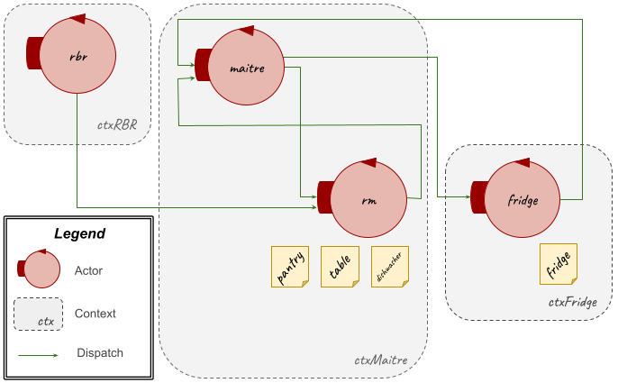
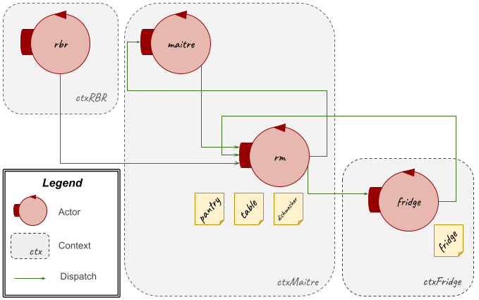
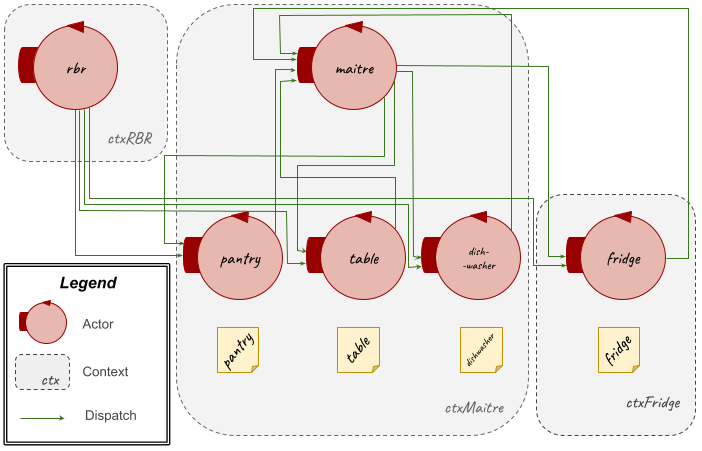
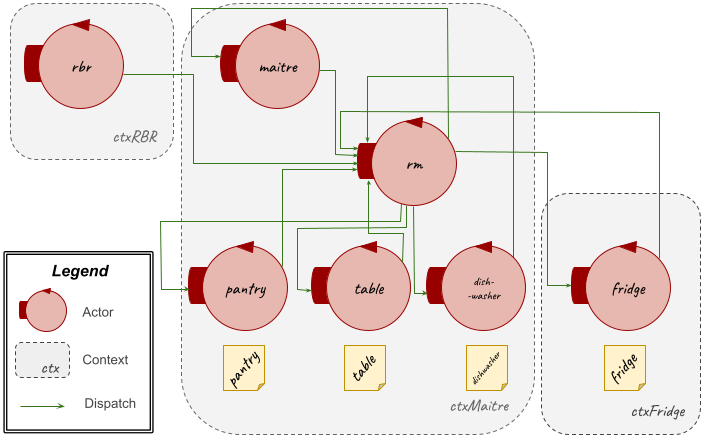
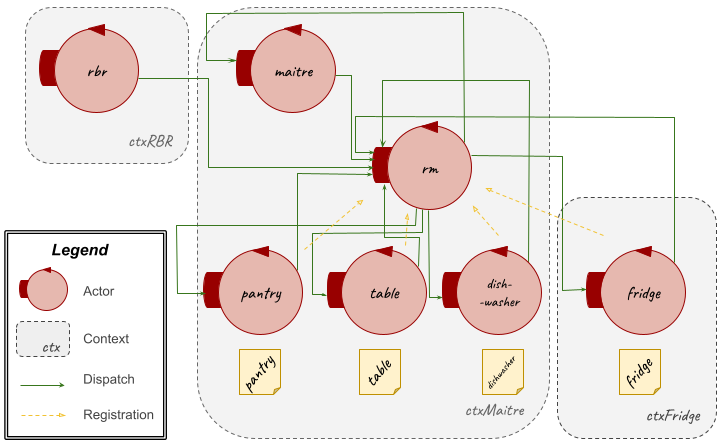

Introduction
Keeping in mind the motto:
"there is no code without a project, no project without problem analysis and no problem without requirements", this document presents a possible solution to the requirements provided by the customer, achieved with a top-down approach in three main phase: requirements analysis, problem analysis and a design phase.
Requirements
Requirement Analysis
Glossary
By the interaction with the customer, here it's exposed an essential glossary about the meaning of the names and of the verbs included in the
requirements text given by the customer.
| room |
It's an environment equipped with a set of smart and non-smart resources and in which the interactions between these elements happen. These resources are: a pantry, a dishwasher and a fridge, that are all embedded into the wall of the room; a table, that is placed in the center of the room; an RBR. When system starts no people is in it, besides the Maître de Salle. |
| Maître de Salle |
Person who manages the room and its elements, using the maître's smartphone. |
| maître's smartphone |
Smartphone application or a user-GUI in a browser used by Maître de Salle to interact with smart resources in the room (fridge and RBR). |
| fridge |
It's a smart device, having knowledge base on his storage, and an "Internet Thing". It's embedded into the wall of the room and it's filled with a proper set of items when system starts. It must be able to comunicate, via CoAP, with maître's smartphone and RBR. |
| pantry |
It's a non-smart resource embedded into the wall of the room and it's filled with a proper set of items when system starts. |
| dishwasher |
It's a non-smart resource embedded into the wall of the room and it's empty when system starts. |
| table |
It's a non-smart resource put in the center of the room and it's empty when system starts. |
| RBR - Room Butler Robot |
It's a DDR able to work as a Room Butler: it must be able to comunicate with maître's smartphone and fridge and to walk around the room to execute the task, avoiding the fixed and mobile obstacles. When system starts and after it completed a task, it must wait new commands in the RH position. |
| DDR - Differential Drive Robot |
The customer provided all the documentation about this topic: the documentation about the basicRobot (at basicrobot2021.html), that can be implemented as a virtual robot (at VirtualRobot2021.html) or as a real robot, that can be an mbot (at MBot2020.html) or a nano robot (at LabNanoRobot.html). |
| RH - Robot Home |
It's the position in the room where the RBR boots up and where he comes back after every task. |
| task |
it's a task that the RBR must execute when required by Maître de salle via maître's smartphone. There are three possible tasks, that are mutually exclusive and that must be executed in this order: Prepare the room, Add food and finally Clear the room. |
| Prepare the room |
This task consists in putting on the table dishes taken from the pantry and food taken from the fridge. The set of items to put on the table is fixed and it's properly described somewhere. |
| Add food |
This task consists in putting on the table some specific food (defined by a food-code) taken from the fridge if it exists. |
| food-code |
Univoque code associated to a specific food. |
| Clear the room |
This task consists in putting in the fridge and in the dishwasher respectively non-consumed food and dishes taken from the table. |
Requirements Analysis
Once we have understood the main concepts set by the
requirements text given by the customer, it's now possible to analyze them.
The software system is a distribuited system composed by three main entities:
- RBR, running on its own robotNode;
- maître's smartphone, running on a maitreNode;
- fridge, running on a fridgeNode.
|
 |
The software running on maitreNode must allow Maître de Salle to:
- send the commands to RBR to execute tasks or to stop and reactivate them (only if there are already activated tasks);
- known and to show the objects related to each resources, smart (fridge) and non-smart(pantry, dishwasher, table), so it must be able to comunicate with fridge too.
|
 |
The software running on robotNode must be able to:
- execute the task associated to command received by the maître's smartphone;
- stop/reactivate a running task when it's required by the maître's smartphone;
- ask fridge if it contains a specific food defined by a food-code and to receive the answer;
- send a warning to the maître's smartphone when the fridge doesn't contain the food required;
- return to his RH at the end of every task;
- avoid the impact with obstacles.
|
The software running on fridgeNode must be able to:
- answer to the maître's smartphone, via CoAP (so it must know the destination URI), with his content when it's required;
- answer to the RBR, via CoAP (so it must know the destination URI), when it asks if it contains a specific food defined by a food-code.
|
A First Set of Functional Test Plans
Scenario
Here, it's illustrated a possible scenario of the system.
| Steps in the Scenario |
Simplified Representation of Each Step |
- The room is empty, beside the Maître de Salle. The RBR is on its RH. The fridge and the pantry are embedded with a proper set of items; while the dishwasher and the table are empty.
|
 |
- The Maître de Salle sends the prepare command (for the task Prepare the room) to the RBR and waits. The RBR executes the task related to the command and at the end he returns to its RH.
|
 |
- The party starts and the room is opened to people: so now there are other obstacoles in the room. The Maître de Salle can send at any time to RBR the addFood (food-code) command (for the task Add food). The RBR asks fridge if it has the food specified by food-code and the fridge answers to RBR, via CoAP, with answer command. If the fridge doesn't contain that food, then the RBR sends a warning to the Maître de Salle; otherwise the RBR executes the task and then he returns to its RH.
|
 |
- At the end of the party the room is empty again, beside the Maître de Salle. The Maître de Salle sends to RBR the clear command (for the task Clear the room) and waits. The RBR executes the task and then he returns to its RH.
|
 |
At every time of the service:
- The Maître de Salle can use consult command to know the state of each element in the room (fridge, pantry, dishwasher, table). In this case, the fridge answers via CoAP, using the expose command, to show its content.
- The Maître de Salle can use the stop or reactivate command to stop or restart an already activated task, otherwise these commands have no effect.
- The RBR must avoid the obstacles.
|
Test Plans
It's necessary to make some test plans that must be verified for the correct working of the final system, according to the requirements provided by the customer.
Below it's reported a first planning of tests:
- Tests of the position of the RBR that must be on its RH when system starts and at the end of each task;
- Tests of the states for each element (fridge, pantry, dishwasher, table) in the room in every moment of the service (start, end, end task, consult command);
- Tests of all the communications between entities;
- Tests of the path carried out by the RBR that must be the one expected to execute the task required by the Maître de Salle;
- Tests of the mutual exclusion of tasks and of their order of execution;
- Tests of the state of the RBR to verify that it is stopped after receiving stop command and to verify that it resumes task execution after receiving the reactivate command;
- Tests of the stop and reactivate commands that can be used by Maître de salle only when there is a running task;
- Test of the capability of the RBR to avoid all the possible obstacles.
A First Model of the System Architecture
From the requirements analysis, it's possible to obtain a first model, that is an initial representation of the system architecture, using a meta-model written in a machine-understandable language, like
QActor, that describes the main interactions and behaviors between the main system components. In particular, the three main entities (
RBR,
maître's smartphone,
fridge) are represented by three actors (QActors, that behave as
Finite State Machines and work as
CoAP observable resources) (
rbr,
maitre,
fridge) and the nodes (
robotNode,
maitreNode,
fridgeNode) where they run are represented by contexts (
ctxRBR,
ctxMaitre,
ctxFridge).
Making this, there were been found some problems, that will be addressed and solved next in the problem analysis:
- the stop/reactivate feature is just described as a dispatcher but is still not working cause none state reads that message;
- the consult feature is still not completed cause it's necessary to manage the state information of smart and non-smart elements, but in this representation it's handled only the fridge state information.
Furthermore, the
maitre is described here as a
mock client, because it's early, in the requirements analysis, to represent his full proactive behavior that depend from a GUI.
| Machine Understandable Architecture Model |
A Possible Graphic Representation |
ReqAnalysisModel.qak
|

|
| Moore State Machine Diagram |


|
Problem Analysis
- What To Do:
- Identify the main (technical) problems involved by the requirements
+ the most appropriate (software) technologies (the best tools/libraries/supports etc.) to adopt that are necessary and/or useful for building the system
+ evaluate the abstraction gap and give a quantitative measure of the effort/resources necessary to build the system and clarify the constraints (human, technical, economical, etc.) related to both the software product to build and the software production process
- Define (a model of) the logical architecture of the system
- Refine the set of functional TestPlan
- In the context of SCRUM:
- define a (first) product backlog
- a possibile set/sequence of SPRINT
Identification of the Problems and the Corresponding Solutions
Starting from the requirements analysis, it's now necessary to found the main problems and abstraction gap involved by the requirements and to solve them, establishing the most appropriate technologies necessary for building the system.
- General System
- In the requirements analysis, there were been identified three main entities that run on different nodes, therefore the system is distribuited. To model it, it's available the Qak-infrastracture, provided by the it.unibo.qakactor-2.4.jar library. This framework provides a built-in message-driven tecnology to support the communications between different actors running on different contexts. In this way, it's possible to design the main components of the system using QActor meta-model.
- To support the distribuited communications, it's possible to use the TCP, MQTT and/or CoAP protocols; the last one, by requirements, must be used by the fridge to communicate with the other two main components. In particular, MQTT is a IoT optimized messagging protocol which allows to implement a publish/subscribe interaction; while CoAP is a protocol for point-to-point comunications among different nodes on the same network. CoAP supports also the observe mechanism where the node state is seen as a resource (CoAP) observed by other CoAP clients.
- In the room there are non-smart resources, whose states should be managed by the software system. This could be done in different ways, listed below.
- Using a resource manager actor (rm) which manages the state of each non-smart resource. It receives the consult command from maitre and answers it exposing the state of each non-smart resource. Moreover, when the rbr executes the tasks, it interacts with the rm to change the state of each non-smart resource.
- Pro:
- easy to implement;
- easy for maitre to obtain the state of each resource, sending consult command to rm and fridge.
- Cons:
- the rm has to manage the state for every non-smart resource and this can result a concectually intricate operation when it must update a resource state at request of rbr.
|
 |
- Using a resource manager actor (rm) which manages the state of each resource (smart and non-smart). It works as an intermediary between the maitre (which sends it the consult command to know the state of each resource) or the rbr (which interacts with it to change the state of each resource, during the execution of each task) and the other resources. In this way, the rm will know the states of non-smart resources and it will communicate with fridge to know its state.
- Pro:
- easy to implement;
- easy for maitre to obtain the state of each resource, only sending consult command to the rm;
- rm is the only component that manages the resources and this brings to a cleaner architecture.
- Cons:
- the rm has to manage the state for every non-smart resource and this can result a concectually intricate operation when it must update a resource state at request of rbr;
- when rbr wants to change the state of the fridge there is one more step: the rbr must communicate with rm, which communicates to fridge the desired change.
|
 |
- Managing the state of each non-smart resource using dedicated actors. In this way, the maitre, to know the state of each resource (smart and non-smart) sends to each actor the consult command. At the same way, when the rbr executes the tasks, it interacts with each actor to change the state of each resource.
- PRO
- easy to implement;
- rbr can communicate directly with the resource actor of which it wants to change the state.
- CONS
- because of the simplicity of non-smart resources, their representation through actors could result a computational resources waste;
- the maitre has to send a consult command for each resource actor and to wait for each reply.
|
 |
- Managing the state of each non-smart resource using dedicated actors and using a resource manager actor (rm) which manages the state of each resource (smart and non-smart). It works as an intermediary between the maitre (which sends it the consult command to know the state of each resource) or the rbr (which interacts with it to change the state of each resource, during the execution of each task) and the other resources actors. In this way, the rm will communicate with fridge and the other non-smart resource actors to know their states.
- PRO
- easy to implement;
- the maitre delegates the rm for the manage of all the resources;
- the rbr delegates the rm for the state change of each resource.
- CONS
- because of the simplicity of non-smart resources, their representation through actors could result a computational resources waste;
- the rm has to send a consult command for each resource actor and to wait for each reply; then it must communicate the result to maitre;
- the rm must communicate with each resource actor when rbr requires for a state change;
- the rm works only as an intermediary from maitre or rbr and resource actors. It does the work of maitre and rbr adding a step; so it results not useful.
|
 |
- Managing the state of each non-smart resource using dedicated actors and using a resource manager actor (rm) which manages the state of each resource (smart and non-smart). At system start, there is a registration protocol where each resource try to subscribe it-self to rm; so to make the system more dynamic and ready at future resource add. The rm works as an intermediary between the maitre (which sends it the consult command to know the state of each resource) or the rbr (which interacts with it to change the state of each resource, during the execution of each task) and the other resources actors. In this way, the rm will communicate with fridge and the other non-smart resource actors to know their states.
- PRO
- easy to implement;
- the maitre delegates the rm for the manage of all the resources;
- the rbr delegates the rm for the state change of each resource;
- the presence of a registration protocol makes the system more dynamic and ready at future resource add.
- CONS
- because of the simplicity of non-smart resources, their representation through actors could result a computational resources waste;
- the rm has to send a consult command for each resource actor and to wait for each reply; then it must communicate the result to maitre;
- the rm must communicate with each resource actor when rbr requires for a state change.
|
 |
Therefore, exposed some possible solutions, the most appropriate seems to be the number 3, because it makes the most of the message communication system and allows to extend the functioning of the actors if the resources they represent, in future, assume a more advanced behavior.
- Futhermore, it's necessary a initialization procedure which loads the initial state for each resource (smart and non-smart) with its own elements set. So to manage the state persistence and its representation it's possibile to use different approaches.
- Inserting resources state data directly in the code.
- PRO
- CONS
- the resources state is fixed in the code and this isn't a good practice, because it makes the code dirty;
- difficult to create mock states for testing.
|
- Using a text file for each resource (smart and non-smart), where to read ((?)and write) data of the state of each resource.
- PRO
- separation between code and data; so to have a more clean code;
- easy to create mock states for testing.
- CONS
- it's necessary to introduce the read (load the resource state) ((?)and write (save the resource state)) from text file functionality to implement this solution.
|
- Availing the Prolog functionality make available by the Qak-infrastracture. In this way, the resource initial state is represented by facts in a prolog file (one for each resource actor) and can be obtained through specific methods in this file.
- PRO
- separation between code and data; so to have a more clean code;
- easy to create mock states for testing;
- (?)system able to manage a knowledge base already built-in the qak architecture.
- CONS
- (?)it's necessary to introduce/integrate the ... functionality to implement this solution.
|
- Managing the state persistence through a database (DB). SPIEGARE MEGLIO?
- PRO
- separation between code and data; so to have a more clean code;
- easy to create mock states for testing;
- (?)it is a classic approach to the persistence; data structured; possibility to use a well known patter
- CONS
- it's necessary to install a database server and to manually implement the database access.
|
(?)Therefore, exposed some possible solutions, the most appropriate seems to be the number 3, because it integrates best with the Qak-infrastructure and it is easier to manage/and this makes state management easier. (?) and allows to extend the functioning of the actors if the resources they represent, in future, assume a more advanced behavior.
- Said where to memorize the state of each resource, now it's necessary to establish how to load these informations at start of the system. It can be done:
- creating, in the prolog file, (pre-existing) facts with a prefixed value for each resource state, which can be load at start of (the system) each resource actor;
- providing the maitre with a configuration tool/adding in the maitre software application a configuration tool, so to make possible for the Maître de Salle/user (if it want) to insert or change the initial state values for each resource state in the room at the start of the system. This can be done (thanks to the possibility to add or remove a fact) removing old facts and adding new facts.
For an initial implementation of this system it will be adopted the first solution, but in future it could be ever "added" the second solution.
- An other problem could be represented by the update of the state value of each resource. This could be done:
- updating and so changing the old state values in the prolog file (removing old facts and adding the new ones);
- loading at start of the system/each actor the/its state value from the/its prolog file and saving it in a variable, which will represent the resourse state value and which will update when necessary/required.
The best solution, to be implemented for the realization of this system, seems to be the second, because (?)in this way the resource state initial value never changes and ..... .
IN MAITRE???
- An other problem could be represented from prepare command/Prepare the room task. In fact, before sending this command, it's necessary to specify how much elements the rbr has to take from the resources ((ACTORS OR RESOURCES???) pantry and fridge) and bring to the table, being careful that the number of these elements is less or equal then the available number of elements. To do this, there are many possibilities, like:
- using prefixed values for the number of elements in prepare commmand (in the code);
- making that the maitre (ACTOR? or user?) can decide how many elements to insert for the prepare command and, to do this, it's/it could be useful run a consult command at the start of the system, so as to have the updated resources state values which limit the choose of the elements (that must be less or equal then the available number of elements) by maitre.
(Said this,) the second solution seems to be the best, because it is predisposed to a possibile future change of the resources initial state, while using the first solution, in case of future change of the resources initial state, the code will have to be changed, that is never a good practice.-
- A similar problem could be represented from addFood (metto food-code??) command/Add food task. Here, before sending this command, the maitre must specify which element (food-code) the rbr must require to the fridge and, if possible, take and bring to the table. This can be done making possible for the maitre the choose of this element from/using the set of elements obtained through the consult command runned before the prepare command and used to obtain the resources state values.
-
- RBR
- To allow rbr to move, the customer provides a library it.unibo.qak21.basicrobot-1.0.jar. In particular, this framework provides the basicRobot (basicrobot2021.html) and its possible implementations: virtual robot (VirtualRobot2021.html), on its own WEnv (Web Environment), or real robot, that can be mbot (MBot2020.html) or nano robot (LabNanoRobot.html).
- To execute the tasks, the rbr must be able to reach every element in the room with which he has to interact (fridge, dishwasher, pantry, table) and also it must be able to return on its RH. Therefore, to know where the elements and the RH are situated in the room (<- abstraction gap? -> solution:), it's available a support, IssActorKotlinRobotSupport-2.0.jar, which allows rbr, at its boot, to create a map of the room or to load an existing one.
- To be able to map the room and to satisfy the requirement avoid the impact with obstacles, it's possible to use data collected from a sensor, which communicates through events with the rbr. This sensor can be rapresented, in the software system, by a sonar (in both virtual and real robot), whose library it.unibo.qak21.basicrobot-1.0.jar is provided by the customer.
- The rbr it's both a proactive, because (perchè è proattivo?), and a reactive element, because it reacts to the commands received from maitre and to events received from sonar to avoid the impact with obstacles. (riceve ed esegue i comandi, reagisce agli eventi (prodotti dall'attore sonar) per soddisfare il requisito 'avoid the impact with the mobile obstacles')
- i comandi stop e reactivate possono essere eseguiti solo se il robot sta già eseguendo un task e deve essere eseguito dal maître prima il comando stop ed in seguito reactivate. Come fa il robot a gestire questi comandi mentre sta eseguendo un task?
- Maitre
- The software running on the maitre's smartphone must provide an user interface to allow the user (Maître de Salle) to interact with the system. This software may be a native (android or IOS) or a web application running on a mobile browser.
(Dopo un'interazione col cliente/Dopo una attenta valutazione dei mezzi disponibili per progettare questo software, è risultato più opportuno l'utilizzo di una web application, in quanto risulta uno strumento più versatile)
- Fridge
- The requirements specify that the fridge must comunicate through CoAP protocol. This can be easily obtained, with the Qak framework, sending a normal dispatch to another actor running on another context. The software running on the fridge context (ctxFridge) should comunicate via dispatch (CoAP) with the actors running on other contexts.
(2) Model of system's logical architecture
Define (a model of) the logical architecture of the system
- Model of the logical architecture of the system:

(3) Test Plan
Refine the set of functional TestPlan
- Functional TestPlan:
(4) SCRUM context
In the context of SCRUM:
- define a (first) product backlog
- a possibile set/sequence of SPRINT
- In the context of SCRUM:
- First product backlog:
- Possibile set/sequence of SPRINT:
Product Backlog
A first Product Backlog can be:
- planning
- RBR moving
- prepare the room task
- add food task
- clear task
- sonar
- mapping
- rbr avoid obstacles
- managing resources (actors + state manager??)
- consult
- stop/reactivate
- gui matre's smartphone software
- Deployment
- Maintenance
first SPRINT sequence
A possibile set/sequence of SPRINT can be:
- SPRINT 0
- Planning: insert an initial map representation and use of Planner
- Integration of Basic Robot for the RBR
- Prepare the room task
- Add Food task
- Clear the room task
- Tests
- SPRINT 1
- Sonar
- Mapping
- Avoid the obstacles requirement
- Tests
- SPRINT 2
- Resources representation: an actor for each non-smart resource + State Manager??
- Consult
- Tests
- SPRINT 3
- Stop/Reactivate
- Tests
- SPRINT 4
- gui matre's smartphone software
- Tests
Test plans
Project
Testing
Deployment
Maintenance
By Romeo Stefano (stefano.romeo@studio.unibo.it) and Russo Maria (maria.russo10@studio.unibo.it)